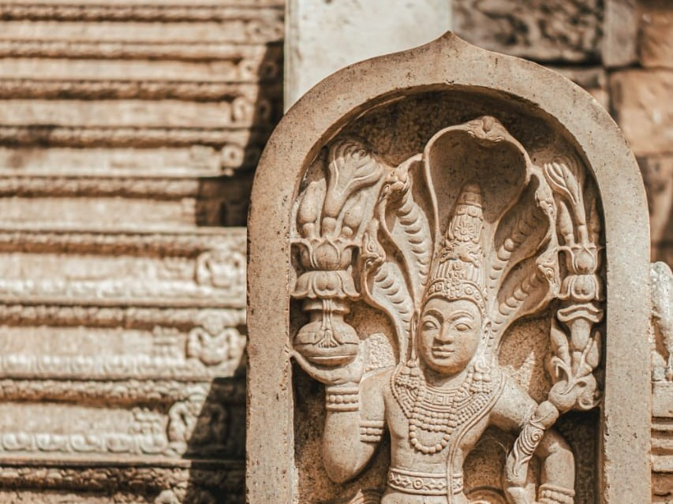

We have assembled a list of recommended places to visit in your tour of Sri Lanka, each chosen specifically to provide you with an unique experience.

Anurapdhapura
A breathtaking UNESCO World Heritage Site brimming with magnificent stupas, sprawling ruins, and sacred Bodhi trees, offering an enchanting glimpse into the island's rich history and spiritual heritage.Immerse yourself in the serenity of this city as you explore centuries-old wonders and witness the traditions that have shaped Lanka's cultural tapestry.
Polonnaruwa
Discover the enchanting allure of Polonnaruwa, the encient capitol of once great kingdoms.Traverse the sprawling landscapes, encounter majestic dagobas, and experience the mystique of Polonnaruwa's cultural heritage in every step you take.
Sigiriya
Ascend to the heavens as you climb the legendary Lion Rock, adorned with mesmerizing frescoes and ancient ruins. Behold breathtaking panoramic views, feel the echoes of history, and unravel the secrets of this fortress, where nature and architectural brilliance intertwine harmoniously.
Bambarakanda Falls
Bambarakanda Falls, the tallest waterfall in Sri Lanka. Cascading down from towering cliffs, its pristine waters create a mesmerizing spectacle amidst lush green surroundings. Immerse yourself in the serenity of this enchanting oasis, where the sound of rushing water and the mist in the air combine to create an unforgettable experience of beauty and tranquility.
World's End
Prepare for an exhilarating adventure as you stand on the edge of a sheer precipice, overlooking a seemingly endless abyss of mist-shrouded valleys and rolling hills. Let your senses be captivated by the awe-inspiring beauty of this natural wonder, where the convergence of clouds and earth creates a surreal experience that will leave an indelible mark on your soul.
Adam's Peak
A sacred mountain peak revered by multiple religions and surrounded by mystical legends. Ascend the well-trodden path to witness the breathtaking sunrise that paints the sky with hues of gold and pink. Stand at the summit, where panoramic views of mist-covered peaks and lush valleys unfold, and feel a profound sense of peace and spirituality.